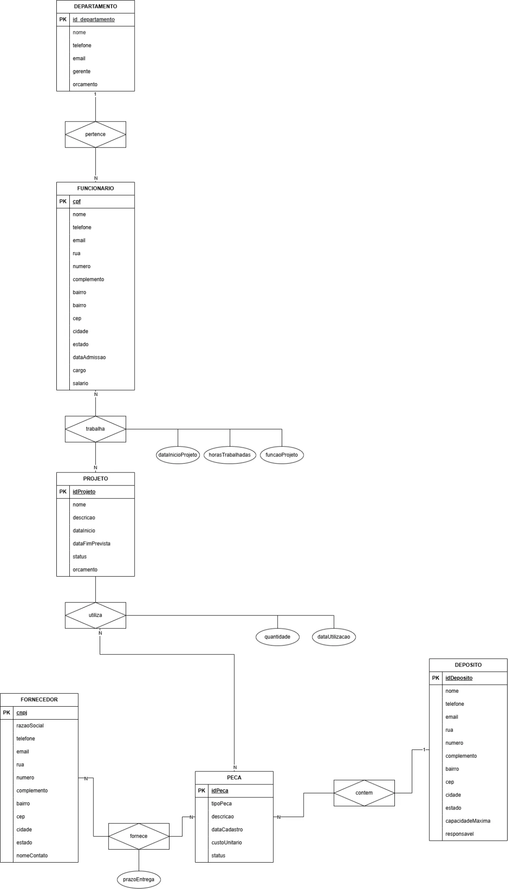
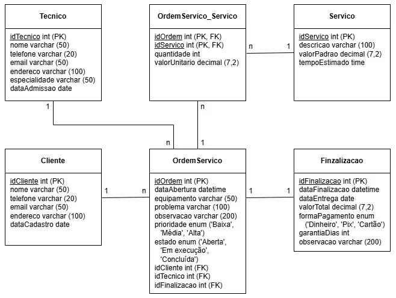
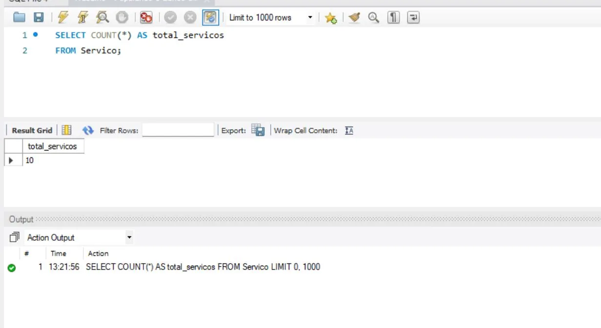
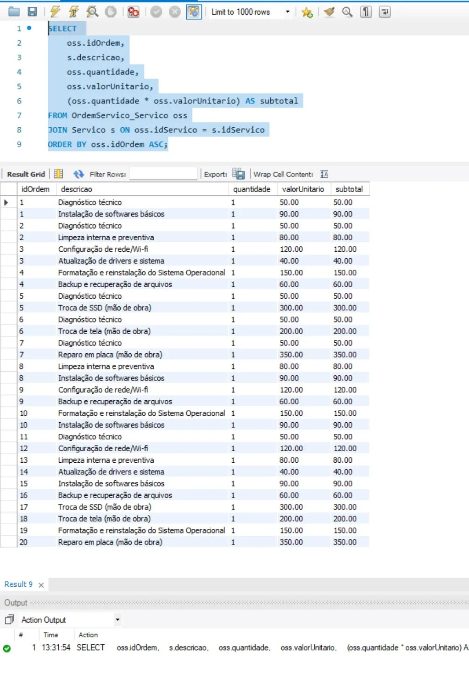
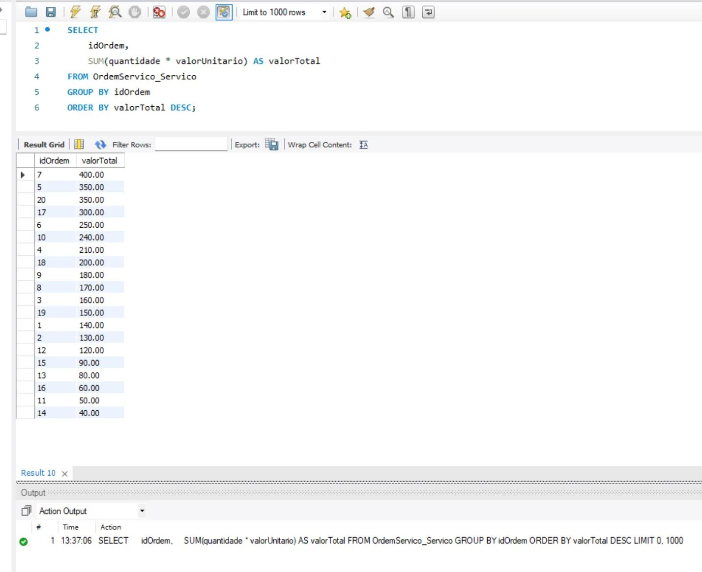

Dados estruturados para resolver problemas reais de gestão.
Atividade prática da graduação em Análise e Desenvolvimento de Sistemas (UNINTER), composta por dois exercícios distintos: modelagem conceitual de um sistema corporativo industrial e implementação de um banco relacional para controle de ordens de serviço. Ambos foram desenvolvidos como estudos acadêmicos.
Modelagem conceitual de um sistema industrial
O primeiro cenário apresenta uma indústria que precisa relacionar informações de departamentos, funcionários, projetos, peças, depósitos e fornecedores. A partir das regras de negócio, desenvolvi um Modelo Entidade-Relacionamento (MER), representando entidades, atributos, cardinalidades e relacionamentos.
Identificação das informações necessárias ao processo industrial.
Associações entre funcionários, projetos, peças, fornecedores e depósitos.
Representação de vínculos um-para-muitos e muitos-para-muitos.
Controle de participantes dos projetos, utilização de peças e fornecedores.

Implementação do banco de ordens de serviço
A segunda etapa utiliza outro cenário: uma empresa que administra
clientes, técnicos, serviços prestados e ordens de serviço. Com base no modelo
relacional fornecido na atividade, implementei no MySQL o banco Empresa,
com as tabelas e seus relacionamentos.
Cliente, Tecnico,
Servico, Finalizacao, OrdemServico
e OrdemServico_Servico.
Foram utilizadas chaves primárias, chaves estrangeiras e restrições NOT NULL
conforme os requisitos da atividade.

Consultas SQL e resultados
Além da estrutura do banco, executei consultas no MySQL Workbench para responder perguntas do negócio. Abaixo estão exemplos do código apresentado no trabalho, acompanhados de evidências de execução.
Contagem de serviços cadastrados
Uma consulta agregada para identificar a quantidade total de serviços.
SELECT COUNT(*) AS total_servicos
FROM Servico;
Junção de tabelas com JOIN
Relacionamento entre as ordens de serviço e os serviços executados para obter a descrição, quantidade, valor unitário e subtotal de cada item.
SELECT
oss.idOrdem,
s.descricao,
oss.quantidade,
oss.valorUnitario,
(oss.quantidade * oss.valorUnitario) AS subtotal
FROM OrdemServico_Servico oss
JOIN Servico s ON oss.idServico = s.idServico
ORDER BY oss.idOrdem ASC;
Totais por ordem de serviço com GROUP BY
Agrupamento de itens por ordem, somando os subtotais para identificar o valor total de cada ordem de serviço e ordenar os resultados por valor decrescente.
SELECT
idOrdem,
SUM(quantidade * valorUnitario) AS valorTotal
FROM OrdemServico_Servico
GROUP BY idOrdem
ORDER BY valorTotal DESC;
Filtro e ordenação
Outra consulta desenvolvida permite identificar apenas ordens de serviço abertas, organizadas cronologicamente.
SELECT dataAbertura, equipamento, prioridade
FROM OrdemServico
WHERE estado = 'Aberta'
ORDER BY dataAbertura ASC;O que este projeto demonstra
- Interpretação de requisitos e regras de negócio para modelagem de dados.
- Criação de banco e tabelas relacionais usando
CREATE DATABASEeCREATE TABLE. - Aplicação de
PRIMARY KEY,FOREIGN KEYe restrições de campos. - Uso de consultas
SELECT,COUNT,WHERE,ORDER BY,JOIN,SUMeGROUP BY. - Organização de consultas para obtenção de informações úteis à gestão.
Possibilidades de evolução
Este estudo pode ser expandido futuramente para incluir dados simulados mais
completos, consultas analíticas adicionais, VIEWs e integração com
um dashboard do Power BI. Essas extensões ainda não fazem parte do trabalho apresentado.